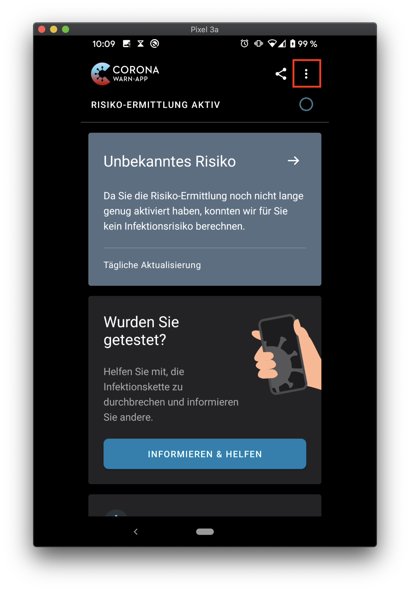
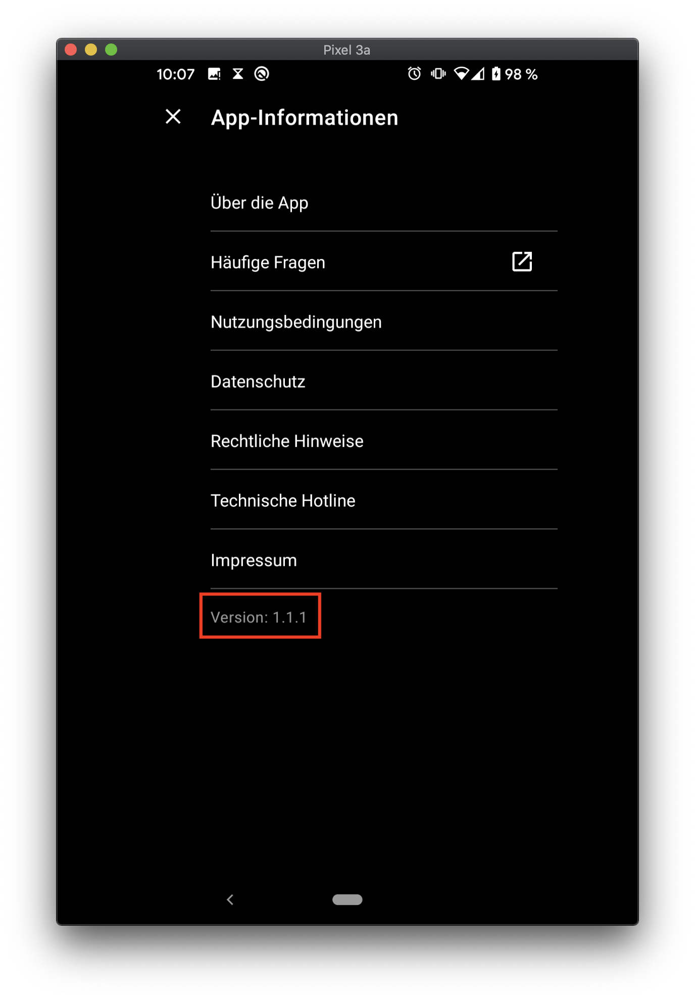
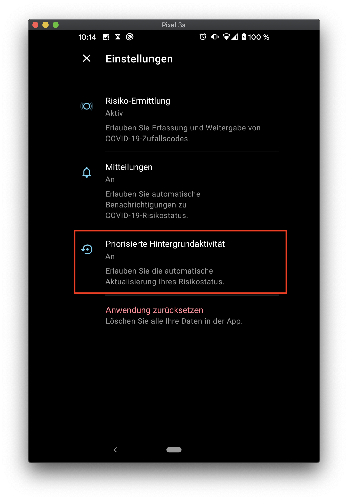
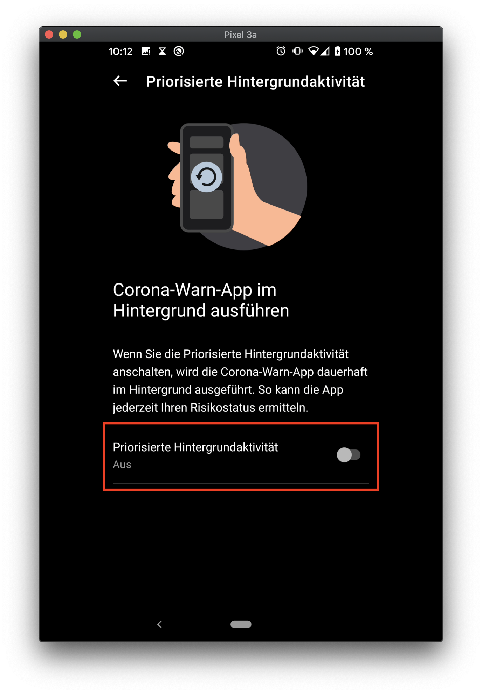
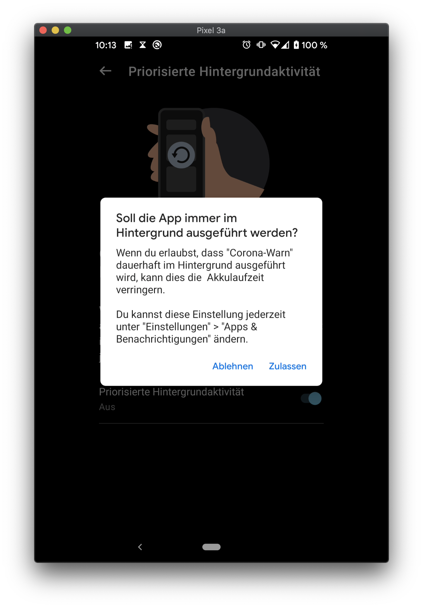
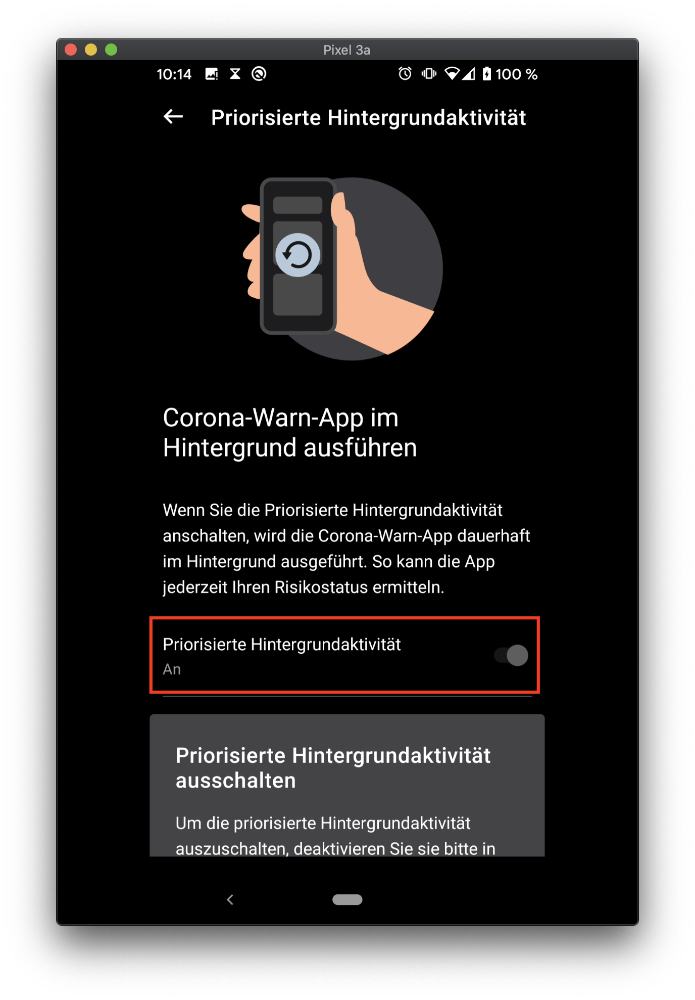

Hintergrundaktivität einschalten
Ab Version 1.1.1 der Corona-Warn-App kann die Hintergrundaktivität direkt über die App aktiviert werden. Unter dem Punkt "App-Informationen" im Menü kannst du prüfen, ob du diese oder eine neuere Version installiert hast. Falls deine Version älter ist, kannst du ein Update direkt aus dem AppStore von Apple oder Google installieren.
Um das Menü zu öffnen, klicke auf die drei vertikalen Punkte oben rechts (im ersten Bild unten markiert), anschließend klicke auf den Punkt “App-Informationen”. Die Version der App auf deinem Telefon steht ganz unten, unter dem Punkt “Impressum” (siehe zweites Bild unten). Die Versionsnummer besteht aus drei Zahlen. Ist die erste Zahl 1 und sind die zweite und dritte Zahl größer oder gleich 1, dann hast du eine passendes Version der App installiert. Sonst solltest du deine App jetzt über den App Store deines Telefons updaten.
 
Sobald du eine passende Version der Corona-Warn-App installiert hast, solltest du jetzt prüfen, ob die “Hintergrundaktivität” eingeschaltet ist. Dafür musst du wieder das Menü über die drei vertikalen Punkte (siehe das erste Bild oben) öffnen. Im Menü klickst du jetzt auf den Punkt “Einstellungen”.
Der Bildschirm sollte dir jetzt eine neue Seite anzeigen. Überprüfe, ob unter dem Punkt “Priorisierte Hintergrundaktivität” das Wort “An” steht (siehe Bild unten). Falls ja, hast du die Hintergrundaktivität bereits eingeschaltet und musst nichts weiter machen. Du kannst die App jetzt schließen.

Andernfalls klicke auf den Punkt “Priorisierte Hintergrundaktivität”. Im nächsten Bildschirm solltest du den Punkt “Priorisierte Hintergrundaktivität” unter dem das Wort “Aus” steht und einen Knopf daneben (siehe erstes Bild unten). Drücke den Knopf, ein neues Fenster sollte sich öffnen (siehe zweites Bild unten). Klicke auf “Zustimmen” um die Hintergrundaktivität zu erlauben.
 
Anschließend sollte unter dem Punkt “Priorisierte Hintergrundaktivität” das Wort “An” stehen (siehe Bild unten). Du hast erfolgreich die Hintergrundaktivität eingeschaltet und kannst die App jetzt schließen.
